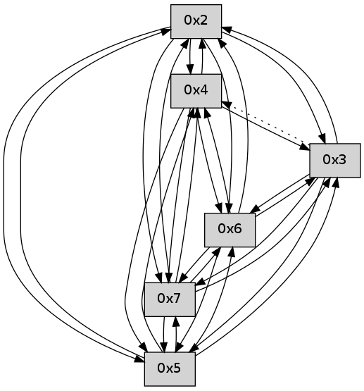

>> << IDX [start] -5 +0 +5 +25 +100 [25.2680389881]
 Previous packets
----------------------------------------------------------------------
20.173008 beacon01(faad) #0 coord=01,02,03,04,05,06,07 cycle=496.0ms assoc
-- color-indic=0 64 b8 e1
20.182976 beacon02(faad) #0 coord=01,02,03,04,05,06,07 cycle=496.0ms assoc 64 ef 24
20.192975 beacon03(faad) #0 coord=01,02,03,04,05,06,07 cycle=496.0ms assoc 64 43 86
20.202976 beacon04(faad) #0 coord=01,02,03,04,05,06,07 cycle=496.0ms assoc 64 34 f3
20.212977 beacon05(faad) #0 coord=01,02,03,04,05,06,07 cycle=496.0ms assoc 64 98 51
20.222978 beacon06(faad) #0 coord=01,02,03,04,05,06,07 cycle=496.0ms assoc 64 7d be
20.232978 beacon07(faad) #0 coord=01,02,03,04,05,06,07 cycle=496.0ms assoc 64 d1 1c
20.244372 [Hello(5): seq=3 sym=7,6,4,2,3 sysInfo= stat=7:2,0,0,0/6:2,0,0,0/4:0,0,0,0/2:1,0,0,0/3:0,0,0,0]
20.248060 [Hello(2): seq=3 sym=7,6,3 asym=4,5 sysInfo= stat=7:2,0,0,0/6:2,0,0,0/3:0,0,0,0/4:0,0,0,0/5:0,0,0,0]
20.251498 [Hello(4): seq=3 sym=5,7,6,2,3 sysInfo= stat=5:1,0,0,0/7:2,0,0,0/6:2,0,0,0/2:1,0,0,0/3:0,0,0,0]
20.254571 [Hello(3): seq=3 sym=7,6 asym=5,4,2 sysInfo= stat=7:2,0,0,0/6:2,0,0,0/5:0,0,0,0/4:0,0,0,0/2:0,0,0,0]
----------------------------------------------------------------------
20.739123 beacon01(faad) #0 coord=01,02,03,04,05,06,07 cycle=496.0ms assoc
-- color-indic=0 64 83 d7
20.749092 beacon02(faad) #0 coord=01,02,03,04,05,06,07 cycle=496.0ms assoc 64 d4 12
20.759092 beacon03(faad) #0 coord=01,02,03,04,05,06,07 cycle=496.0ms assoc 64 78 b0
20.769092 beacon04(faad) #0 coord=01,02,03,04,05,06,07 cycle=496.0ms assoc 64 0f c5
20.779093 beacon05(faad) #0 coord=01,02,03,04,05,06,07 cycle=496.0ms assoc 64 a3 67
20.789092 beacon06(faad) #0 coord=01,02,03,04,05,06,07 cycle=496.0ms assoc 64 46 88
20.799095 beacon07(faad) #0 coord=01,02,03,04,05,06,07 cycle=496.0ms assoc 64 ea 2a
20.810512 [Hello(7): seq=3 sym=2,3,5,4 asym=6 sysInfo= stat=2:3,0,0,0/3:3,0,0,0/5:2,0,0,0/4:2,0,0,0/6:0,0,0,0]
20.816696 [Hello(6): seq=3 sym=2,3,5,4,7 sysInfo= stat=2:3,0,0,0/3:2,0,0,0/5:2,0,0,0/4:2,0,0,0/7:1,0,0,0]
----------------------------------------------------------------------
21.305237 beacon01(faad) #0 coord=01,02,03,04,05,06,07 cycle=496.0ms assoc
-- color-indic=0 64 ce 8d
21.315205 beacon02(faad) #0 coord=01,02,03,04,05,06,07 cycle=496.0ms assoc 64 99 48
21.325206 beacon03(faad) #0 coord=01,02,03,04,05,06,07 cycle=496.0ms assoc 64 35 ea
21.335206 beacon04(faad) #0 coord=01,02,03,04,05,06,07 cycle=496.0ms assoc 64 42 9f
21.345206 beacon05(faad) #0 coord=01,02,03,04,05,06,07 cycle=496.0ms assoc 64 ee 3d
21.355207 beacon06(faad) #0 coord=01,02,03,04,05,06,07 cycle=496.0ms assoc 64 0b d2
21.365207 beacon07(faad) #0 coord=01,02,03,04,05,06,07 cycle=496.0ms assoc 64 a7 70
21.376602 [Hello(4): seq=4 sym=5,7,6,2,3 sysInfo= stat=5:1,0,0,0/7:3,0,0,0/6:3,0,0,0/2:1,0,0,0/3:1,0,0,0]
21.379631 [Hello(3): seq=4 sym=7,6 asym=5,4,2 sysInfo= stat=7:3,0,0,0/6:3,0,0,0/5:0,0,0,0/4:0,0,0,0/2:0,0,0,0]
21.382823 [Hello(2): seq=4 sym=4,7,6,3 asym=5 sysInfo= stat=4:1,0,0,0/7:3,0,0,0/6:3,0,0,0/3:1,0,0,0/5:0,0,0,0]
21.387733 [Hello(5): seq=4 sym=7,6,4,2,3 sysInfo= stat=7:3,0,0,0/6:3,0,0,0/4:1,0,0,0/2:2,0,0,0/3:1,0,0,0]
----------------------------------------------------------------------
21.871350 beacon01(faad) #0 coord=01,02,03,04,05,06,07 cycle=496.0ms assoc
-- color-indic=0 64 f5 bb
21.881320 beacon02(faad) #0 coord=01,02,03,04,05,06,07 cycle=496.0ms assoc 64 a2 7e
21.891319 beacon03(faad) #0 coord=01,02,03,04,05,06,07 cycle=496.0ms assoc 64 0e dc
21.901320 beacon04(faad) #0 coord=01,02,03,04,05,06,07 cycle=496.0ms assoc 64 79 a9
21.911320 beacon05(faad) #0 coord=01,02,03,04,05,06,07 cycle=496.0ms assoc 64 d5 0b
21.921321 beacon06(faad) #0 coord=01,02,03,04,05,06,07 cycle=496.0ms assoc 64 30 e4
21.931319 beacon07(faad) #0 coord=01,02,03,04,05,06,07 cycle=496.0ms assoc 64 9c 46
21.942384 [Hello(6): seq=4 sym=2,3,5,4,7 sysInfo= stat=2:4,0,0,0/3:3,0,0,0/5:3,0,0,0/4:3,0,0,0/7:1,0,0,0]
21.945721 [Hello(7): seq=4 sym=2,3,5,6,4 sysInfo= stat=2:4,0,0,0/3:4,0,0,0/5:3,0,0,0/6:1,0,0,0/4:3,0,0,0]
----------------------------------------------------------------------
22.437465 beacon01(faad) #0 coord=01,02,03,04,05,06,07 cycle=496.0ms assoc
-- color-indic=0 64 54 39
22.447433 beacon02(faad) #0 coord=01,02,03,04,05,06,07 cycle=496.0ms assoc 64 03 fc
22.457435 beacon03(faad) #0 coord=01,02,03,04,05,06,07 cycle=496.0ms assoc 64 af 5e
22.467435 beacon04(faad) #0 coord=01,02,03,04,05,06,07 cycle=496.0ms assoc 64 d8 2b
22.477436 beacon05(faad) #0 coord=01,02,03,04,05,06,07 cycle=496.0ms assoc 64 74 89
22.487434 beacon06(faad) #0 coord=01,02,03,04,05,06,07 cycle=496.0ms assoc 64 91 66
22.497435 beacon07(faad) #0 coord=01,02,03,04,05,06,07 cycle=496.0ms assoc 64 3d c4
22.508522 [Hello(2): seq=5 sym=4,5,7,6,3 sysInfo= stat=4:1,0,0,0/5:1,0,0,0/7:4,0,0,0/6:4,0,0,0/3:1,0,0,0]
22.511812 [Hello(5): seq=5 sym=7,6,4,2,3 sysInfo= stat=7:4,0,0,0/6:4,0,0,0/4:1,0,0,0/2:2,0,0,0/3:1,0,0,0]
22.519023 [Hello(4): seq=5 sym=5,7,6,2,3 sysInfo= stat=5:2,0,0,0/7:4,0,0,0/6:4,0,0,0/2:2,0,0,0/3:2,0,0,0]
22.522245 [Hello(3): seq=5 sym=5,7,6,2 asym=4 sysInfo= stat=5:1,0,0,0/7:4,0,0,0/6:4,0,0,0/2:1,0,0,0/4:0,0,0,0]
----------------------------------------------------------------------
23.003581 beacon01(faad) #0 coord=01,02,03,04,05,06,07 cycle=496.0ms assoc
-- color-indic=0 64 6f 0f
23.013551 beacon02(faad) #0 coord=01,02,03,04,05,06,07 cycle=496.0ms assoc 64 38 ca
23.023550 beacon03(faad) #0 coord=01,02,03,04,05,06,07 cycle=496.0ms assoc 64 94 68
23.033551 beacon04(faad) #0 coord=01,02,03,04,05,06,07 cycle=496.0ms assoc 64 e3 1d
23.043552 beacon05(faad) #0 coord=01,02,03,04,05,06,07 cycle=496.0ms assoc 64 4f bf
23.053552 beacon06(faad) #0 coord=01,02,03,04,05,06,07 cycle=496.0ms assoc 64 aa 50
23.063551 beacon07(faad) #0 coord=01,02,03,04,05,06,07 cycle=496.0ms assoc 64 06 f2
23.074929 [Hello(6): seq=5 sym=2,3,5,4,7 sysInfo= stat=2:5,0,0,0/3:4,0,0,0/5:4,0,0,0/4:4,0,0,0/7:2,0,0,0]
23.076998 [Hello(7): seq=5 sym=2,3,5,6,4 sysInfo= stat=2:5,0,0,0/3:5,0,0,0/5:4,0,0,0/6:1,0,0,0/4:4,0,0,0]
----------------------------------------------------------------------
23.569697 beacon01(faad) #0 coord=01,02,03,04,05,06,07 cycle=496.0ms assoc
-- color-indic=0 64 22 55
23.579665 beacon02(faad) #0 coord=01,02,03,04,05,06,07 cycle=496.0ms assoc 64 75 90
23.589666 beacon03(faad) #0 coord=01,02,03,04,05,06,07 cycle=496.0ms assoc 64 d9 32
23.599665 beacon04(faad) #0 coord=01,02,03,04,05,06,07 cycle=496.0ms assoc 64 ae 47
23.609668 beacon05(faad) #0 coord=01,02,03,04,05,06,07 cycle=496.0ms assoc 64 02 e5
23.619667 beacon06(faad) #0 coord=01,02,03,04,05,06,07 cycle=496.0ms assoc 64 e7 0a
23.629666 beacon07(faad) #0 coord=01,02,03,04,05,06,07 cycle=496.0ms assoc 64 4b a8
23.640773 [Hello(3): seq=6 sym=5,7,6,2 asym=4 sysInfo= stat=5:1,0,0,0/7:5,0,0,0/6:5,0,0,0/2:1,0,0,0/4:0,0,0,0]
23.642981 PARSE ERROR************************
Traceback (most recent call last):
File "PacketAnalysis.py", line 167, in showOperaPacket
structPacket = OperaPacketParse.parsePacket(rawPacket)
File "../../pkg-python/HipSens/Core/OperaPacketParse.py", line 461, in parsePacket
return parseHelloMessage(data)
File "../../pkg-python/HipSens/Core/OperaPacketParse.py", line 125, in parseHelloMessage
struct.unpack("!H",linkList[:2])[0])
error: unpack requires a string argument of length 2
48 24 02 00 00 06 00 02 02 0a 04 00 05 00 07 00 06 00 03 00 53 04 00 00 00 00 4c 0a 00 02 00 02 00 05 00 05 00 02 4d 91
23.647409 [Hello(4): seq=6 sym=5,7,6,2,3 sysInfo= stat=5:2,0,0,0/7:5,0,0,0/6:5,0,0,0/2:2,0,0,0/3:3,0,0,0]
23.653173 [Hello(5): seq=6 sym=7,6,4,2,3 sysInfo= stat=7:5,0,0,0/6:5,0,0,0/4:2,0,0,0/2:2,0,0,0/3:2,0,0,0]
----------------------------------------------------------------------
24.135813 beacon01(faad) #0 coord=01,02,03,04,05,06,07 cycle=496.0ms assoc
-- color-indic=0 64 19 63
24.145782 beacon02(faad) #0 coord=01,02,03,04,05,06,07 cycle=496.0ms assoc 64 4e a6
24.155782 beacon03(faad) #0 coord=01,02,03,04,05,06,07 cycle=496.0ms assoc 64 e2 04
24.165782 beacon04(faad) #0 coord=01,02,03,04,05,06,07 cycle=496.0ms assoc 64 95 71
24.175782 beacon05(faad) #0 coord=01,02,03,04,05,06,07 cycle=496.0ms assoc 64 39 d3
24.185783 beacon06(faad) #0 coord=01,02,03,04,05,06,07 cycle=496.0ms assoc 64 dc 3c
24.195781 beacon07(faad) #0 coord=01,02,03,04,05,06,07 cycle=496.0ms assoc 64 70 9e
24.207169 [Hello(7): seq=6 sym=2,3,5,6,4 sysInfo= stat=2:6,0,0,0/3:6,0,0,0/5:5,0,0,0/6:1,0,0,0/4:5,0,0,0]
24.210187 [Hello(6): seq=6 sym=2,3,5,4,7 sysInfo= stat=2:6,0,0,0/3:5,0,0,0/5:5,0,0,0/4:5,0,0,0/7:3,0,0,0]
----------------------------------------------------------------------
24.701926 beacon01(faad) #0 coord=01,02,03,04,05,06,07 cycle=496.0ms assoc
-- color-indic=0 64 f2 23
24.711895 beacon02(faad) #0 coord=01,02,03,04,05,06,07 cycle=496.0ms assoc 64 a5 e6
24.721894 beacon03(faad) #0 coord=01,02,03,04,05,06,07 cycle=496.0ms assoc 64 09 44
24.731895 beacon04(faad) #0 coord=01,02,03,04,05,06,07 cycle=496.0ms assoc 64 7e 31
24.741896 beacon05(faad) #0 coord=01,02,03,04,05,06,07 cycle=496.0ms assoc 64 d2 93
24.751895 beacon06(faad) #0 coord=01,02,03,04,05,06,07 cycle=496.0ms assoc 64 37 7c
24.761895 beacon07(faad) #0 coord=01,02,03,04,05,06,07 cycle=496.0ms assoc 64 9b de